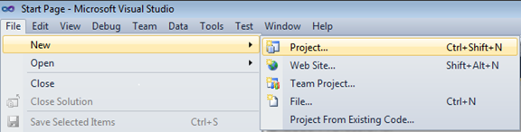

Follow the below steps to add Carousel control by using Visual Studio:
1. Open Visual Studio. On the File menu, select New -> Project. This opens the New Project Dialog box.

Figure 1128: Open New Project
2. In the Project Dialog window, select Silverlight Application and in the Name field type the name of the project, and then click OK.
3. Add the following reference with the sample project.
Syncfusion.Shared.Silverlight.dll
4. Click and open the C# file and add the Carousel control to your application.
5. The below code shows how the Carousel control can be added to an application.
|
[C#]
Carousel carousel = new Carousel();
|